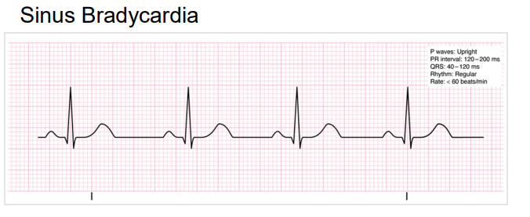
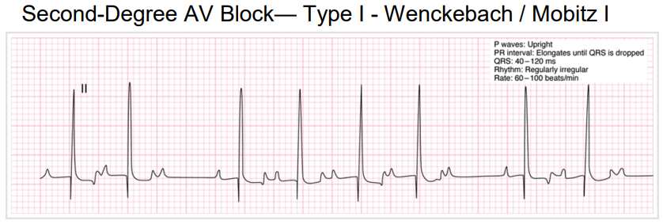
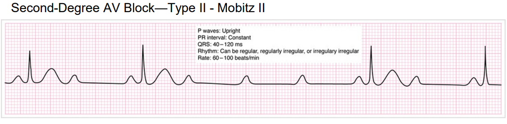
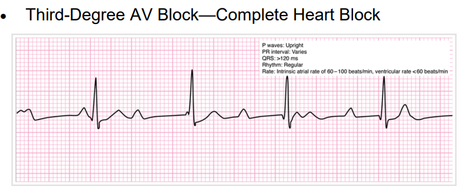
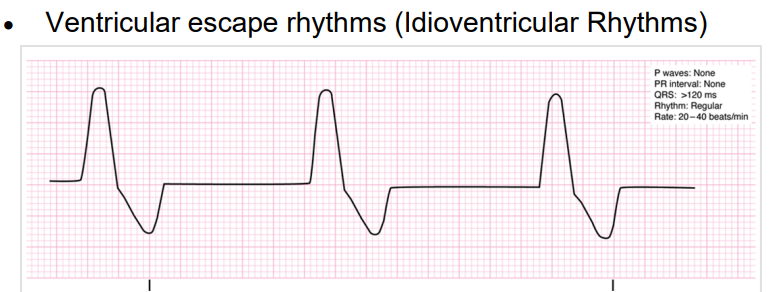

| History | Signs and Symptoms | Differential |
|---|---|---|
|
• Past medical history • Medications (Beta-Blockers, Calcium Channel Blockers, Clonidine, Digoxin) • Pacemaker |
• HR < 60/min with: Chest pain Respiratory distress Hypotension or Shock Altered mental status Syncope |
• Acute Myocardial Infarction (MI) • Hypoxia / Hypothermia • Pacemaker failure • Sinus bradycardia • Athletic • Head injury (elevated ICP) / Trauma • Stroke/Spinal cord lesion • Sick Sinus Syndrome • AV blocks (1°, 2° or 3°) • Overdose • Hypoglycemia |
1.
UNIVERSAL PATIENT CARE.
2. Relay information to incoming ambulance
1. Continue EMR TREATMENT.
2. Obtain 12-lead ECG within 10 minutes of patient contact and
transmit to receiving facility (if available).
3. Consider possible underlying causes of bradycardia (see
differentials above).
4. Relay information to incoming ambulance and/or call for intercept
per
UINTERCEPT CRITERIA.
1. Continue EMT TREATMENT.
2. Establish IV access.
3. Consider Isotonic IV fluid (500 ml) bolus to
maintain SBP ≥ 90 mmHg or MAP ≥ 65 mmHg. Reassess after every 500 ml
bolus and as long as lungs remain clear, you may repeat the bolus to
maintain SBP ≥ 90mmHg or MAP ≥ 65 mmHg; maximum
2 liters.
4.
ATROPINE
1.0 mg IV/IO every 3-5 minutes, as long as
symptomatic bradycardia persists, to a
total dose of 3mg.
5. If no response to
ATROPINE
or signs of impending hemodynamic collapse, consider
TRANSCUTANEOUS PACING.
a. If hemodynamically unstable consider analgesia with
KETAMINE
0.2 mg/kg slow IV/IO/IM
or 0.5 mg/kg IN
, max single dose 20 mg.
After 10 min, may repeat dose x1 from either
route for a maximum combined dose of 50 mg.
-OR-
a. If hemodynamically stable (systolic BP ≥ 90 mm),
MIDAZOLAM
2 mg IV/IN/IO; repeat every 5 minutes as needed to
maintain sedation throughout procedure
6. If inadequate response to
ATROPINE
or
TRANSCUTANEOUS PACING, consider
PUSH DOSE EPINEPHRINE
1ml (10mcg) IV/IO every 2-5 minutes to maintain SBP
of 90-100 mmHg or MAP > 65 mmHg
a. Mix 1 mL of Epinephrine 1mg/10mL (1:10,000) with
9 ml of Normal Saline in a 10 mL syringe resulting in a
concentration of 10 mcg/mL.
PEARLS
• Bradycardia should be managed via the least invasive manner
possible, escalating care as needed
a. Third-degree heart block or the denervated heart (as in cardiac
transplant) may not respond to atropine and in these cases, proceed
quickly to chronotropic agents (such as epinephrine), or
transcutaneous pacing.
b. In cases of impending hemodynamic collapse, proceed directly to
transcutaneous pacing
• The major ECG rhythms classified as bradycardia include:
a. Sinus bradycardia
b. Second-degree AV block
i. Type I - Wenckebach / Mobitz I
ii. Type II - Mobitz II
c. Third-degree AV block (Complete Heart Block)
d. Ventricular escape rhythms (Idioventricular Rhythms)
• Observe for signs of decreased end-organ perfusion: chest pain (CP),
shortness of breath (SOB), decreased level of consciousness, syncope
or other signs of shock/hypotension.
• Consider potential culprit medications including beta-blockers,
calcium channel blockers, sodium channel blockers / anti-depressants,
digoxin, and clonidine.
• Consider hyperkalemia in the patient with wide complex
bradycardia.
• Hypoxemia is a common cause of bradycardia; be sure to oxygenate the
patient.
• Be aware of acute coronary syndrome as a cause of bradycardia in
adult patients.
| KEY DOCUMENTATION ELEMENTS | PERTINENT ASSESSMENT FINDINGS |
|---|---|
|
• Cardiac rhythm / rate • Time, dose and response of medications given • Pacing: Time started or stopped, rate, joules, capture and response • History of event supporting treatment of underlying causes |
• 12-Lead ECG |
| QUALITY METRICS |
|
• Correct medication and dose given for patient condition • Correct application and use of cardiac pacing • Use of sedation with cardiac pacing |
    